las capturas de pantalla (que se llamen nombreAlumno-XX-YY.png donde XX sea el número de ejercicio e YY el número de captura en el ejercicio, todas las capturas se deben guardar en una única carpeta).
la copia de seguridad de los datos de la aplicación
la carpeta de la aplicación (comprimida en un zip)
Las capturas se harán de toda la pantalla, sin ningún tipo de recortes.
1. Descargar la aplicación
Aplicación: MantisBT 2.23.0 (09/12/19). MantisBT es una aplicación de seguimiento de fallos de programas.
Descomprima MantisBT en la carpeta mantisbt. La aplicación se abrirá en el navegador con la dirección iaw/webapps/mantisbt/index.php.
2. Instalar MantisBT
Entre en phpMyAdmin como usuario root y cree un usuario de MySQL con nombre iaw_mantisbt_1, contraseña iaw_mantisbt_1 y base de datos iaw_mantisbt_1.
Instale mantisBT.
De forma predeterminada, el usuario administrador se llama administrator y su contraseña es root.
Haga capturas de la pantalla de inicio y de la pantalla inicial del usuario administrador:
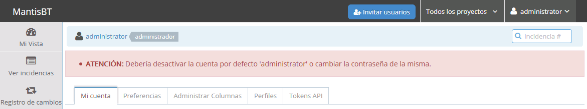
3. Cambiar logo
Copie el archivo del logotipo a la carpeta adecuada sin cambiar su nombre (webapps-logo.png).
Edite directamente el fichero de configuración de MantisBT y cambie el logotipo al archivo copiado.
Haga capturas del fichero de configuración modificado y de la pantalla de inicio:
4. Crear usuarios (1)
Entre en MantisBT y cambie la contraseña del usuario administrator a admin.
Cree un usuario novato sin cuenta de correo electrónico como el de la captura siguiente
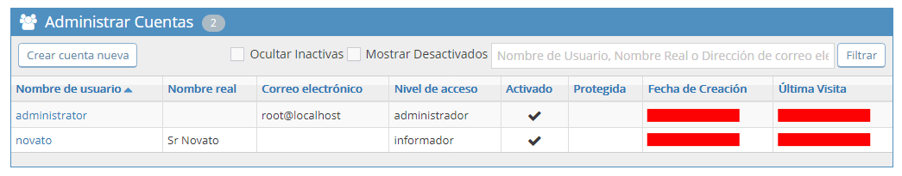
Compruebe que no puede entrar como usuario novato porque no conoce la contraseña (MantisBT la envía por correo electrónico)
Entre en phpMyAdmin como usuario iaw_mantisbt_1 y cambie la contraseña del usuario novato a admin (la misma del usuario administrator).
Haga capturas de la tabla modificada en phpMyAdmin y de la pantalla de inicio del usuario novato:
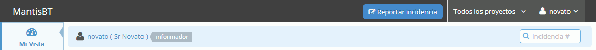
Entre en phpMyAdmin como usuario iaw_mantisbt_1 y cambie la contraseña del usuario novato a novato (las contraseñas se guardan como MD5).
Nota: Si no consigue realizar este apartado, mantenga la contraseña admin.
Haga una captura de la tabla modificada en phpMyAdmin.
5. Crear usuarios (2)
Nota: Si no consigue realizar este ejercicio, cree el usuario enterado con contraseña enterado como en el ejercicio anterior, modificando la base de datos.
Edite directamente el fichero de configuración de MantisBT de manera que la contraseña para los nuevos usarios no se cree automáticamente.
Cree un usuario enterado con contraseña enterado como el de la captura siguiente (en la que se puede escribir la contraseña)
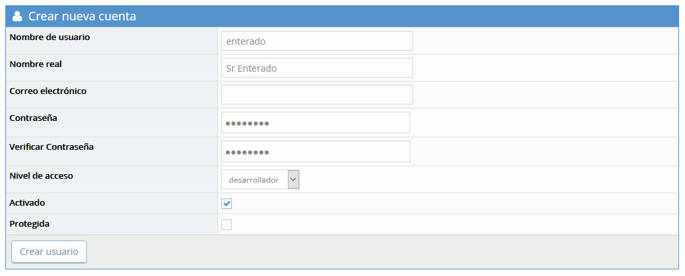
Haga capturas del fichero de configuración modificado y de la pantalla de creación del usuario.
6. Crear proyectos
Cree dos proyectos:
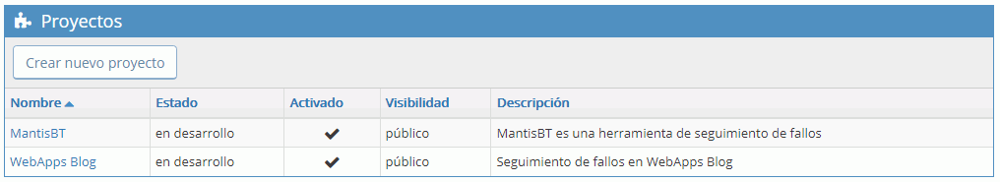
Haga capturas de la pantalla de creación de proyectos y del listado de proyectos.
7. Crear incidencias
Entre en MantisBT como usuario novato.
Abra dos incidencias, una para MantisBT y otra para WebApps Blog de acuerdo con las capturas siguientes:
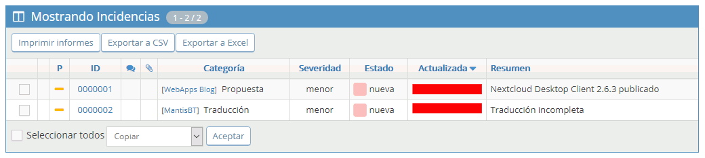
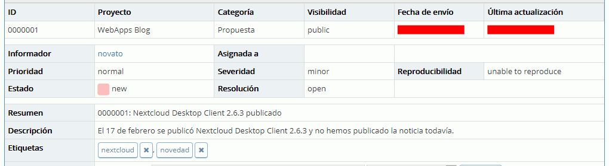
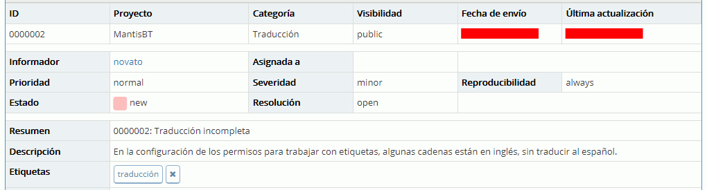
Haga capturas de las pantallas de creación de los elementos que haya sido necesario definir y del resultado final.
8. Resolver incidencias
Como usuario enterado, resuelva las dos incidencias:
Asigne la incidencia relacionada con el WebApp Blog al propio enterado y resuélvala indicando que ha publicado la noticia en el blog:
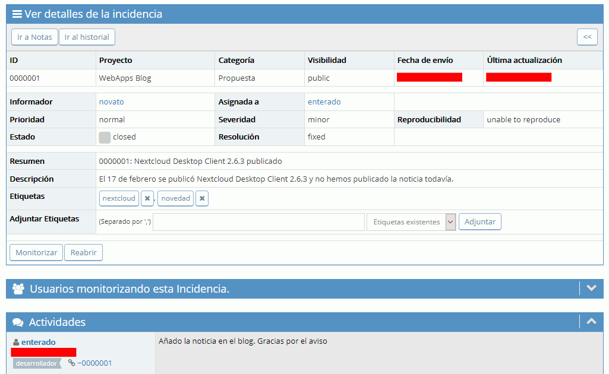
Asigne la incidencia relacionada con MantisBT al administrator y coméntelo:
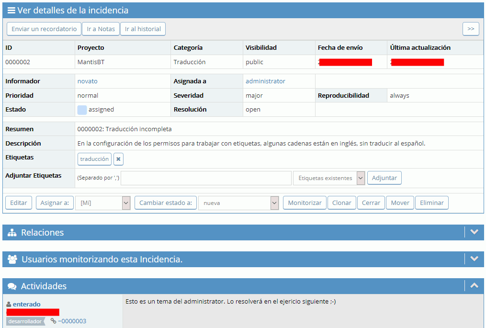
Haga capturas de pantalla mostrando el estado final de las incidencias y de la pantalla de incidencias:
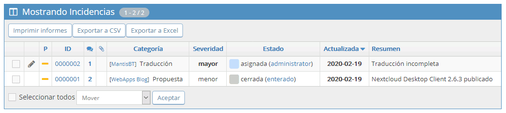
9. Mejorar traducción
Traduzca un par de cadenas que aparecen en inglés:
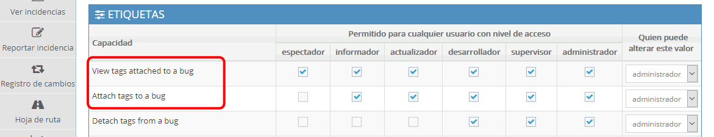
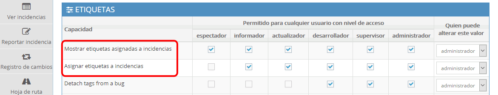
Haga capturas del archivo modificado y del resultado obtenido.
10. Cambiar el aspecto visual
Modifique la hoja de esilo Simplex Layout para obtener el resultado de la captura.
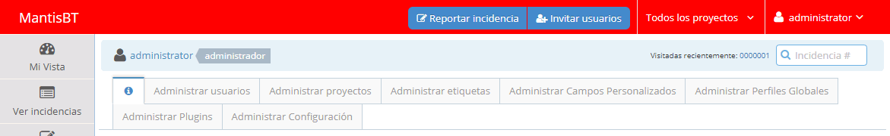
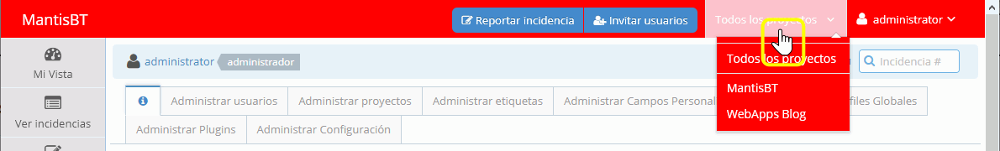
Haga capturas del fichero de la hoja de estilo modificado y del resultado obtenido.
11. Alias
Cree un alias para poder acceder a MantisBT mediante la dirección http://localhost/mantisbt.
Escriba un fichero alias.txt con el alias que ha creado.
Haga una captura mostrando que funciona el alias.
12. Copia de seguridad
Como usuario iaw_mantisbt_1 haga una copia de seguridad de la base de datos.